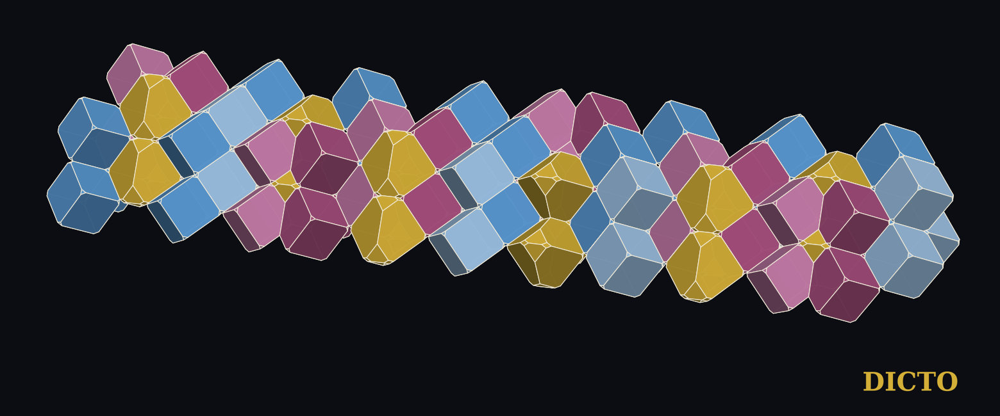
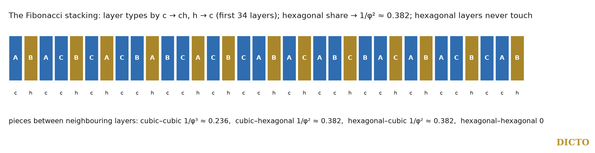

The golden ratio in the volumes of a never-repeating crystal

A stacking of close-packed layers is a sequence of positions A, B, C, each layer in one of the two positions not taken by the layer below. The pure stackings repeat: ABC (cubic) and AB (hexagonal). The rule of halves (#57), the Swap Rule (#61, #64) and the Hexagonality Law (#66) hold on every stacking, and #67 drew from them that the totals of a random stacking are fixed by its share of hexagonal layers alone. DICTO's aim, to bridge the periodic and the aperiodic, asks for the most ordered of the never-repeating stackings: the Fibonacci one. In A Fibonacci Spine (#30) the Fibonacci chain appeared in a five-fold arrangement of the DICTO Ogdoecontahedron; here it is the order of the layers themselves.
A layer is cubic (c) when its two neighbours sit in different positions and hexagonal (h) when they sit in the same (Jagodzinski). Any sequence of types is a stacking: with steps sk = ±1 between layers, layer k is c when sk−1 = sk and h when they differ, so the types fix the steps up to one sign. The Fibonacci stacking takes the types in the order of the Fibonacci word, the limit of the substitution c → ch, h → c started from c: chcchchcchcch… (Figure 2).

Proof. (i) The substitution has matrix [[1, 1], [1, 0]] on the counts (c, h); its eigenvalue φ gives letter frequencies 1/φ for c and 1/φ² for h, the classical result for the Fibonacci word. (ii) Every h in a substituted word is the image of c → ch, the second letter of a block, and every block begins with c; so each h is followed by c, and hh never occurs. (iii) Each h is therefore preceded and followed by c, so ch and hc each have the frequency of h, 1/φ², and cc has 1 − 2/φ² = 1/φ³ (using φ² = φ + 1). (iv) By #66, over any long run of layers the total of such a piece is ncV(cc) + nhV(hh) up to two end terms (#67, Theorem 1); divide by the number of layers and use (i). ∎
So a Fibonacci crystal contains the pure cubic piece and the two mixed pieces only, in golden proportions, and never the pure hexagonal piece; and the pieces of each kind average to a number in ℚ(√5).
In rock salt and nickel arsenide (balls and octahedral atoms of weight λ, tetrahedral holes empty, #64), at λ = 1/3 the exact averages per layer are:
| Piece | Average per layer, exact | Decimal |
|---|---|---|
| ball | 10999/20736 − (71/6912)√5 | 0.507461 |
| octahedral atom | 9715/20736 + (215/20736)√5 | 0.491693 |
| each tetrahedral hole | 11/20736 − (1/20736)√5 | 0.000423 |
They add up to the volume of one layer, as they must; the √5 parts cancel in the sum.
A periodic stacking must close: an even number of sign changes, and steps adding up to a multiple of 3. The Fibonacci words of Fibonacci lengths close after repeating them once, twice or three times: 5 types (chcch) three times gives the 15-layer stacking ABACBCACBABCBAC; 8 types twice the 16-layer ABACBCACBABCACBC; 13 types twice the 26-layer ABACBCACBABCACBCABACABCBAC; 21 types three times a 63-layer stacking. Their hexagonalities 2/5, 3/8, 5/13, 8/21 are ratios of Fibonacci numbers and tend to 1/φ².
For the pieces fixed by their two neighbouring layers the law is a theorem (#66), so these stackings follow it. The Laves foot atom M0 reads three layers above λ = 17/96, where the law is not proved, and #67 found it exact on every stacking up to eight layers. We walked the Laves phases exactly on the 15- and 16-layer Fibonacci approximants with #57's census engine (all census checks passed) and tested every role in every window of λ against nc·T(ABC)/3 + nh·T(AB)/2.
The Fibonacci stacking is the never-repeating crystal of close-packed layers in its most ordered form. Its share of hexagonal layers is 1/φ², its hexagonal layers never touch, and its pieces come in the golden proportions 1/φ³ : 1/φ² : 1/φ². By the Hexagonality Law the golden ratio then enters every average piece volume exactly. One kit of pieces, borrowed from the two repeating stackings, builds the never-repeating one: the bridge between the two orders that DICTO set out to find, here at the level of the pieces themselves.
The Fibonacci chain is the most studied never-repeating one-dimensional order: Baake (1999) obtains it by cutting and projecting the square lattice along a line of slope 1/τ, and calls it the most common and best studied non-periodic 1D point set; its theory is set out in Baake and Grimm, Aperiodic Order (2013), and its Fibonacci numbers and words in the combinatorics of Lothaire (as cited by Kramer, 2011). Our sequence of layer types is this chain. Periodic structures converging to a quasicrystal are its approximants (Goldman and Kelton, 1993), which our 15-, 16-, 26- and 63-layer stackings are; a fault in a Fibonacci stacking is the local flip by which an approximant and its quasicrystal differ (Kléman, 2013). Disordered stackings of layers are described by Markov chains (Hart, Hansen and Kuhs, 2021; Ganesh and Nasr, 2023). The Fibonacci word and its letter and pair frequencies are classical. Fibonacci chains have been used to describe faulted close-packed crystals: Farkas-Jahnke proposed approximating heavily faulted structures such as ZnS by Fibonacci chains of five-layer structure elements (IUCr congress abstract). Fibonacci multilayers (for example quasiperiodic Fe/Cr magnetic multilayers) are studied in physics. We found no statement that a Fibonacci order of the layer types gives the golden proportions of the stacking's pieces, or exact golden-ratio volumes. The Fibonacci chain in DICTO's own work is #30; the laws used are #57, #61, #64, #66 and #67.
Sources checked (28 October 2026). Reference library, second pass (ask-library: "Fibonacci chain one-dimensional quasicrystal diffraction"; "approximants of quasicrystals Fibonacci periodic approximant phason"; "stacking disorder Markov chain layers hexagonality cubicity"; "Sturmian sequence golden mean substitution frequencies"; "aperiodic order Baake Grimm"): M. Baake, A guide to mathematical quasicrystals (1999), pp. 8–10 read (cut and project, the Fibonacci chain); P. Kramer, Gateways towards quasicrystals (2011), p. 7 (Fibonacci numbers, Lothaire); A. I. Goldman and K. F. Kelton, Quasicrystals and crystalline approximants (1993) and M. Baake and U. Grimm, Aperiodic Order, vol. 1 (2013), catalogue entries; M. Kléman, Defects in quasicrystals, revisited (2013), first page; A. G. Hart, T. C. Hansen and W. F. Kuhs (2021) and R. Ganesh and A. K. Nasr (2023), catalogue abstracts; S. Akiyama et al., Aperiodic tile sets from Sturmian lattices (2026) and M. Baake, D. Damanik and U. Grimm, What is aperiodic order? (2015), catalogue entries. First pass (ask-library "Fibonacci stacking sequence quasiperiodic close-packed layers polytype"): S. Dong, Fibonacci and Lucas sequences in aperiodic monotile supertiles (2024); P. J. Steinhardt and H.-C. Jeong (1996); D. Kamenetsky (2026); C. S. Kaplan (2025); M. Kléman (2013), catalogue entries and pages, none on stackings. Web (search summaries): M. Farkas-Jahnke, IUCr congress abstract E0552 (Fibonacci chains for faulted close-packed lattices); arXiv 1204.5523 and 2307.16052 (Fibonacci magnetic multilayers); arXiv 1012.4880; Int. Tables Vol. C ch. 9.2 (close packing).
Data and code. Study 2026-10-28-fibonacci-stackings (fib_words.py, golden.py, golden_rocksalt.json, hexlaw_fib.py, fig69.py), using the exact weight walks of study 2026-10-27-splash-rules (run2; the new walks lvw_ABACBCACBABCBAC, lvw_ABACBCACBABCACBC), attached to this record. References: DICTO, A Fibonacci Spine (#30), DICTO DOI 10.5281/zenodo.23396361; The Focus (#66), 10.5281/zenodo.23717687; Random Stackings and Stacking Faults (#67), 10.5281/zenodo.23718636.